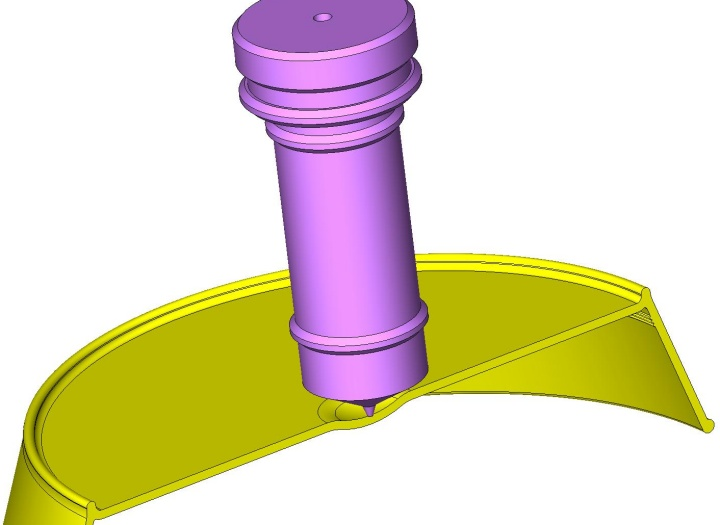
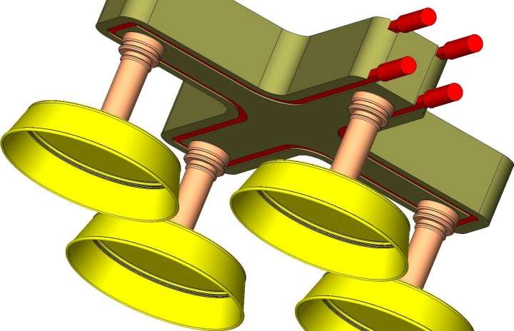
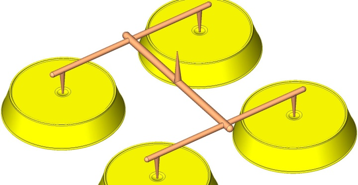
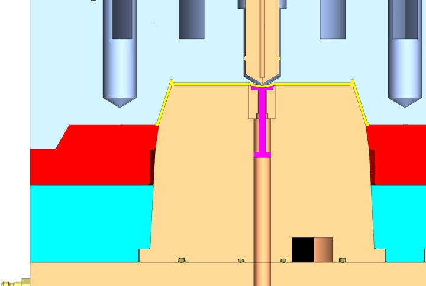
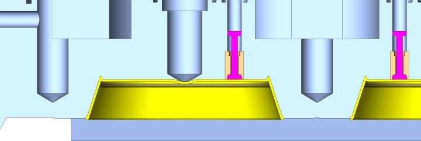
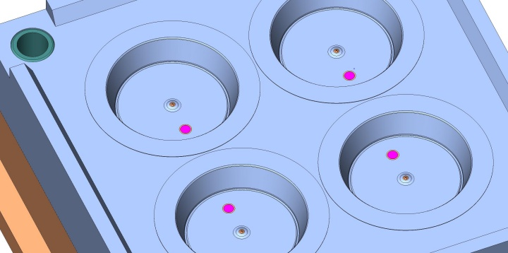
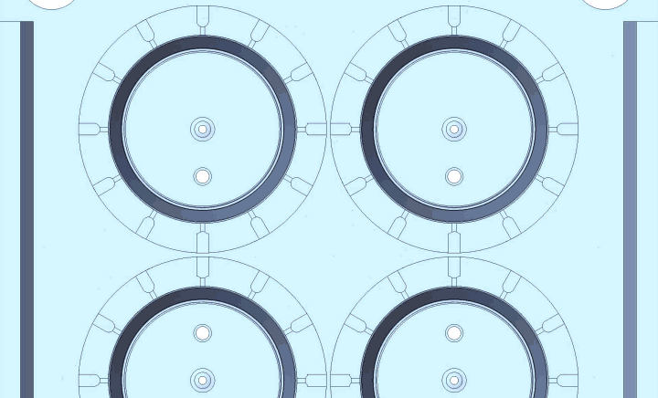
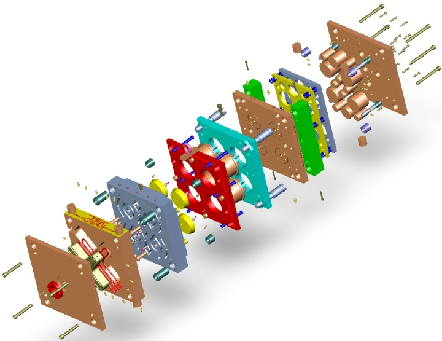
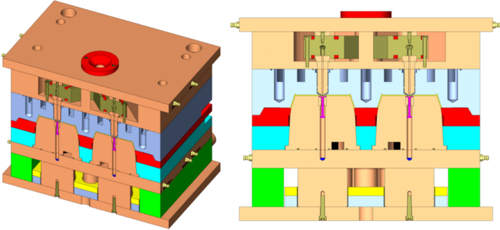
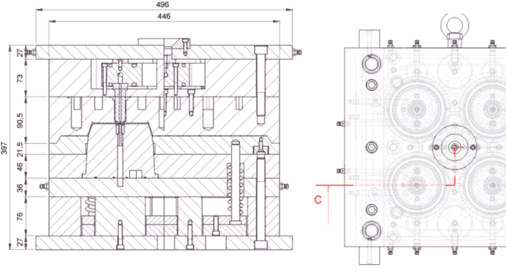

|
Tüm bu sorunlarýn önüne geçilmesi için, bu tarz ürünlerin kalýplarý
- Tek gözlü olarak, ortadan sýcak ya da soðuk yolluk giriþli
- Çok gözlü olarak, manifold ve sýcak yolluk sistemi ile, ortadan yolluk giriþli
- Çok gözlü olarak, üç plakalý soðuk yolluk sistemi ile ortadan yolluk giriþli
- Kalýp merkezlenmesinde herhangi bir kaçýklýk olmamasý için, çekirdekli olarak iþlenen kalýplarda, her göz için ayrý ayrý; monoblok (tek parça) iþlenen kalýplarda, kalýp çevresinde konik birleþme yüzeyleri yapýlmalýdýr. Bu iþçilikten tasarruf edilmek isteniyorsa, standart kalýp elemaný olarak, konik kilit veya kalýp merkezleme bloklarý kullanýlabilinir.

Resim 13 - Ortadan sýcak yolluk giriþi

Resim 14 - Dört gözlü, manifoldlu yolluk sistemi

Resim 15 - Dört gözlü, üç plakalý soðuk yolluk sistemi

Resim 16 - Kalýp plakalarý arasýndaki konik birleþmeler ve erkek lokma üzerindeki havalý itici valf
- Ürünün kalýptan çýkarýlmasý esnasýnda, kalýbýn erkek çekirdeði üzerinde vakum oluþmasýný ve ürünün deforme önlemek için, kalýp hareketli çekirdeðine havalý itici valf konulmalýdýr.
- Kalýp açýlmasý esnasýnda, kalýbýn sabit tarafýnda oluþacak vakum nedeniyle, ürünün deforme olmasýný ve sabit tarafta kalmasýný önlemek için, sabit çekirdek üzerine havalý itici valf konulmalýdýr.

Resim 17 - Sabit tarafa konulan havalý itici valf
- Ürün üzerinde itici pim izi oluþmasýný önlemek ve ürünü daha geniþ yüzeyden kalýp dýþýna doðru ittirmek için, bu ürünler sýyýrýcý plaka ile kalýp dýþýna atýlmalýdýr.
- Ürün içerisine aðýrlýk konulduðunda, ortasýndan aþaðý doðru çökmeye zorlanacak ve zaman içerisinde, ürünün tabaný deforme olacaktýr. Bunun önüne geçmek için, ürün tabanýnda belirli çaplarda, ayak görevi görecek fitiller atýlmalýdýr.
- Seri halde ambalajlanan ürünlerde, kalýp maliyetini düþürmek için farklý boylarda ve aðýrlýklardaki ürünler tek bir kalýp içerisine yerleþtirilmek istenebilir. Bu durumda her bir ürüne giden yolluklarýn kesit kalýnlýklarý farklý olacaktýr. Plastik akýþ analiz programlarý ile kalýp dolum analizi yapýlmalýdýr.
- Plastik akýþýný zorlaþtýracak keskin hatlardan ve dönüþlerden kaçýnýlmalý, mümkün olduðunda yuvarlak dönüþler tercih edilmelidir.
- Sýyýrýcý plakanýn hareket mesafesi, ürünün kalýptan düþmesini saðlayacak kadar olmalýdýr. Derin kalýplarda ise, sýyýrýcý plaka hareket mesafesi, üründe oluþacak vakumu yenecek kadar olup, ürünün kalýp dýþýna düþürülmesi havalý itici valflar sayesinde saðlanmaktadýr.
- Sýyýrýcý plakaya hareket veren itici plakalar üzerinde boksör yuvasý olarak adlandýrýlan, deliklerin, ortadan bir adet yapýlmasý, zamanla sýyýrýcý plakanýn çarpýlmasýna ve çapak oluþumuna sebep olacaktýr. Boksör yuvalarýnýn en az iki ya da dört adet yapýlmasý kalýp ömrünü artýracaktýr.
- Sýyýrýcý plakanýn kalýp kapanmasý sýrasýnda, kalýbýn sabit tarafýna çarpmasý ile yerine oturmasý, kalýbýn sesli çalýþmasýna sebep olur. Sýyýrýcý plakanýn her iki tarafýna vulkolon adý verilen, kauçuk ya da plastik yaylarýn konulmasý bu sorunun önüne geçer.
- Bazý tasarýmlarda, kalýp ömrünün uzamasý kalýbýn ortasýndan çökmesini önlemek için, itici plakalar ve köprüler konulmaz. Sýyýrýcý plaka, üzerine konulan miller sayesinde hareketini direk enjeksiyon makine boksör milinden alýr.
- Sýyýrýcý plakanýn birden fazla vuruþ yapmasýný saðlamak için, itici plakanýn önüne yay konulmalýdýr.
- Sýyýrýcý plaka, sýnýrlandýrma cývatalarý ile belirlenen kursu içerisinde hareket ettirilmelidir.
- Enjeksiyon makinesinin kilitleme gücünü en üst düzeyde kullanmak için, kalýp mal kesme yüzeyleri, ürüne 20 mm uzaklýkta yapýlmalý ve etrafý boþaltýlmalýdýr.

Resim 18 - Kalýp öpüþme yüzeyleri azaltýlmýþ kalýp
- Gaz kanallarý ihmal edilmesi, kalýp boþluðundaki havanýn dýþarý atýlamamasýna ve ürün üzerinde siyah yanýk lekelerinin oluþarak, tam dolum saðlanmamasýna sebep olur. Gaz kanallarý, plastik malzemenin viskozitesine göre, 0,02-0,06mm derinliðinde açýlmalýdýrlar.

Resim 19 - Gaz çýkýþ kanallarý
ÖRNEK KALIP TASARIMI
SolidWorks eDrawings formatýndaki tüm kalýp 3D modelini aþaðýdaki linkten indirebilirsiniz;
tabak-kalibi.easm (1,7MB)
Bu dosyayý görüntüleyebilmek için bilgisayarýnýzda SolidWorks eDrawings yüklü olmalýdýr.
Aþaðýdaki sayfadan eDrawings yazýlýmýný ücretsiz olarak indirip bilgisayarýnýza kurabilirsiniz:
www.solidworks.com/pages/products/edrawings/eDrawings.html
eDrawings kullaným klavuzu için týklayýnýz:
eDrawings-kullanim-klavuzu.doc

ÜRÜNÜN
ADI: Yuvarlak Tabak
HAMMADDE: PP (poliproplen)
AÐIRLIÐI: 27,25gr
KALIBIN
ÖLÇÜLERÝ:446x446x397 (mm)
AÐIRLIÐI: 630 kg
KOLON ARASI: 496 mm
GÖZ SAYISI: 4
YOLLUK SÝSTEMÝ: Sýcak yolluklu manifoldlu
UYGUN ENJ.MAK.: 150 ton
KALIP ÇEKMESÝ: 1,017 (PP malzemenin çekme payý 0,015-0,020)
ÝTÝCÝ SÝSTEM: Sýyýrýcý plakalý
KALIP TÝPÝ: Sabit taraf monoblok, hareketli taraf lokmalý
ÇEKÝRDEK MALZ.: 1.2738
HAMÝL MALZ.: 1.1730
SIYIRICI MALZ.: 1.2714
ISIL ÝÞLEM: Diþi ve sýyýrýcý plakalar ve erkek lokmalar nitrasyon
yapýlacak.

Resim 20 - Kalýbýn kesit görünümleri

Resim 21 - Kalýbýn teknik resimleri
|